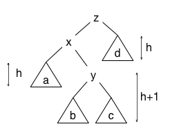
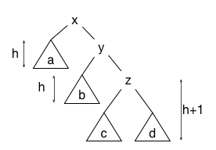
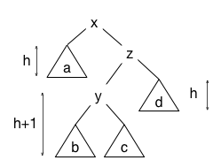

We've already seen that by imposing the binary search tree invariant (BST invariant), we can search for keys in a tree of height \(h\) in \(O(h)\) time, assuming that the keys are part of a total order that permits pairwise ordering tests. However, nothing thus far ensured that \(h\) is not linear in the number of nodes \(n\) in the tree, whereas we would like to know that trees are balanced: that their height \(h\), and therefore their worst-case search time, is logarithmic in the number of nodes in the tree.
There are many different balanced tree schemes. The first was AVL trees, named after its inventors, Adelson-Velsky and Landis. AVL trees strengthen the usual BST invariant with an additional shape invariant regarding the heights of subtrees. The AVL invariant states that at each node, the heights of the left and right subtrees differ by at most one.
Let \(h(t)\) be the height of the subtree rooted at node \(t\) (where an empty tree is considered to have height \(−1\) and a tree consisting of a single node is considered to have height \(0\)). The balance factor or imbalance of a node \(t\) is defined to be the difference between the heights of its two subtrees:
The tree that violates the AVL invariant is (c), because its left subtree has height \(1\) and its right subtree has height \(-1\), so its balance factor is \(2\).
A balanced tree has the property that the height \(h\) is \(O(\log n)\); that is, that \(h ≤ k \log n\) for some \(k\) and sufficiently large \(n\). To demonstrate this fact, we show that an AVL tree of height \(h\) contains a number of nodes that grows geometrically with \(h\).
Let us determine the minimum number of nodes that must exist in an AVL tree of height \(h\) or greater; call it \(N(h)\). A node of height at least \(h\) has two subtrees, one of which must have height at least \(h−1\). By the AVL invariant, the other subtree must have height at least \(h−2\). Therefore, the minimum number of nodes that must be in the tree is \(N(h−1)+N(h−2)+1\), that is, the number of nodes in the two subtrees plus 1 for the root node. This gives us an equation called a recurrence:
From the recurrence and the facts that \(N(−1) = 0\) and \(N(0) = 1\), we can derive the minimum number of nodes for some small values of \(h\):
\begin{align} N(-1) &= 0 \\ N(0) &= 1 \\ N(1) &= 2 \\ N(2) &= 4 \\ N(3) &= 7 \\ N(4) &= 12 \\ N(5) &= 20 \\ \dots \\ \end{align}It is not obvious that the function N grows exponentially, but it does. You may already have noticed that the recurrence closely resembles the Fibonacci recurrence: \begin{align} F_n &= F_{n-1} + F_{n-2} \\ F_0 &= 0 \\ F_1 &= 1 \end{align}
In fact, if we add 1 to each term in the sequence of values for \(N(h)\), the familiar Fibonacci sequence emerges: 1, 2, 3, 5, 8, 13, ... . In general, \(N(h) = F(h+3) - 1\). We now show that N(h) grows asymptotically at the same rate as the Fibonacci sequence and that the Fibonacci sequence grows exponentially.
It turns out that there is an exact formula for the Fibonacci numbers:
\begin{align} \newcommand\phib{\overline{φ}} F_n & = (φ^n − \phib^n)/\sqrt{5} & \text{(1)} \end{align}where \(φ\) is the golden ratio \((1+\sqrt{5})/2 ~~(≈ 1.618)\) and \(\phib\) is its negative reciprocal \((1-\sqrt{5})/2 ~~(≈ -0.618)\). The golden ratio and its negative reciprocal share an interesting property: \(φ^2 = φ+1\) and \(\phib^2 = \phib+1\). This is true because they are the two roots of the quadratic polynomial \(x^2 - x - 1\). Multiplying both sides of the former equation by \(φ^{n-2}\) and both sides of the latter equation by \(\phib^{n–2}\), we can conclude that for any exponent n,
\begin{align} φ^n & = φ^{n-1} + φ^{n–2} \hspace{6em} & \text{(2)} \\ \phib^n &= \phib^{n–1} + \phib^{n–2} \end{align}Now we can show that the formula (1) for the Fibonacci numbers is correct by induction. First observe that the formula is correct for n=0 and n=1:
\begin{align} F_0 & = 0 = (φ^0 - \phib^0)/\sqrt{5} \\ F_1 & = 1 = ((1+\sqrt{5})/2 - (1-\sqrt{5})/2)/\sqrt{5} = (φ^1 - \phib^1)/\sqrt{5} \end{align}Now assume that \(n ≥ 2\) and the formula is correct for the entire sequence up to but not necessarily including \(F_n\). (This assumption is called the induction hypothesis). In particular, the formula is assumed correct for \(F_{n-1}\) and \(F_{n-2}\). Then: \begin{align} F_n & = F_{n-1} + F_{n-2} & \text{(by the recurrence)} \\ & = (φ^{n-1} - \phib^{n-2})/\sqrt{5} + (φ^{n-2} - \phib^{n–2})/\sqrt{5} & \text{ (by the induction hypothesis)} \\ & = (φ^{n-1} + φ^{n-2} - (\phib^{n–1} + \phib^{n–2}))/\sqrt{5} & \text{(by arithmetic)} \\ & = (φ^n - \phib^n)/\sqrt{5} & \text{(by property (2))} \end{align}
Since we know the formula (1) works for 0 and 1, and we know that for any n, if it works for \(n-1\) and \(n-2\) then it works for \(n\), we can conclude by induction that it works for all nonnegative values of \(n\).
Now observe that since \(|\phib| < 1\), the term \(\phib^n\) becomes vanishingly small for large \(n\). Asymptotically, the Fibonacci numbers grow as \(φ^n\). Technically, they are \(Θ(φ^n)\), meaning that \(φ^n\) is both an asymptotic upper and lower bound on \(F_n\).
In fact, for all \(h≥0\), we have \(N(h) ≥ φ^h\). Given an arbitrary AVL tree of height \(h\) containing \(n\) nodes, since \(n ≥ N(h) ≥ φ^h\), we have \(h ≤ \log_{φ} n\). All logarithms are related by constant factors, so \(h\) is \(O(\log n)\). Therefore AVL trees are balanced.
Without showing an exact formula for \(N(h)\) or \(F_n\), we can even more easily prove an exponential lower bound on \(N(h)\) by induction. We actually show that \(N(h) ≥ φ^h\) for all \(h\). Experimentally, we have \(N(0) = 1 = φ^0\) and \(N(1) = 2 ≥ φ^1\). Now assume as induction hypothesis that the condition \(N(h) ≥ φ^h\) holds for all values up to but not necessarily including some \(h≥2\). We can show that the formula must also hold for \(h\), using the induction hypothesis and property (2).
Property (2) tells us that \(φ^h = φ^{h-1} + φ^{h-2}\). Then
\begin{align} N(h) & = 1 + N(h-1) + N(h-2) & \text{(by the definition of N)} \\ & ≥ 1 + φ^{h-1} + φ^{h-2} & \text{(by the induction hypothesis)} \\ & ≥ 1 + φ^h & \text{(by property (2))} \\ & ≥ φ^h \end{align}Now we apply induction as before. The inequality \(N(h) ≥ φ^h\) holds for \(h=0\) and \(h=1\), and we know that for any \(h\), if it holds for \(h-1\) and \(h-2\) then it holds for \(h\), so we can conclude by induction that it holds for all \(h≥0\).
To insert a new element (key/value pair) into an AVL tree, we start by using the key in the usual way to find where the key can be inserted as a leaf while preserving the BST invariant. Adding a new leaf makes the path to that leaf one longer than previously, so the AVL invariant may now be broken. Only the heights of ancestors of that leaf changes, so the invariant can only broken at nodes along the path from the root to the leaf. To fix the invariant, we find the lowest node along that path, and apply one or two tree rotations. Assuming that the insertion is done recursively, it is easy to identify where along the path the invariant is broken as the recursive calls return, assuming that each node keeps track of its height in the tree. Of course, that also means that nodes' heights must also be updated as the recursion unwinds. It is also possible to implement insertion iteratively, in this case keeping track of the last node on the path where the invariant breaks.
If inserting a new leaf breaks the AVL invariant at some node t, the invariant can only be broken by 1; that is, the difference between the heights of the left and right subtrees of t is either 2 or −2, depending on whether the insertion happened in the left or right subtree, respectively. Without loss of generality, let us consider the left-child case, where the difference is 2. Suppose the height of the right subtree is some h and the left subtree has height h+2. Since insertion only affected one path, one of the two subtrees of the left subtree must have height h+1 and the other, h. Depending on which subtree has height h+1, there are two cases to consider:
|
LL case |
 LR case |
In this figure, z is the lowest node that is unbalanced. Therefore, the shorter subtree (c on the left side and a on the right side) must have height h; if their heights were lower, z would not be the lowest unbalanced node.
Now, how do we fix the AVL invariant? If we are in the LL case shown on the left, we perform a single tree rotation to make y the parent of z, and update z so that its left child is now the former right child of y (that is, c). The resulting tree looks like this:
Rotations preserve the BST invariant. Because the BST invariant held before the rotation, we know that a < x < b < y < c < z < d (where a, b, c, d stand for all nodes in subtrees a, b, c, d). This ordering of the keys is preserved in the rotated tree.
Now we argue that the rotation reestablishes the AVL invariant. Since subtrees a, b, c, and d all have at most height h, the nodes x and z are now at height h+1, and node y is at height h+2. The longest path within this part of the tree is now one shorter than before–it's back to h+2—so this change also fixes the AVL invariant for all nodes above y.
To fix the AVL invariant in the LR case, we convert the tree into exactly the same structure as for the LL case. However, this requires more work: all three nodes x, y, and z must be changed. We perform two rotations, first with x and y, then y and z.
Symmetrically to the LL and LR cases, there are RR and RL cases. They are handled in exactly the same way, yielding the same resulting tree shown above.
|
 RR case |
 RL case |
It is not really necessary to store the height of each node at the node. Instead, we can store just the difference in height between the left and right subtrees: –1, 0, or 1. This requires only two bits of space at each node. It only needs to be updated when it changes. When inserting a node, the only nodes for which it changes are those on the path from the leaf up to the first unbalanced node (or the root) and those involved in whatever tree rotations are performed.
Removing a key from the tree can also make it unbalanced. The algorithm works in the usual way for BST deletion, depending on the number of children of node storing the deleted key. Recall that if that node has 0 children, it is pruned; if 1 child, it is spliced out, and if 2 children, its element is replaced with that from the node storing the next (or previous) key in the tree. The node storing that next or previous key is the node that is deleted. In any case, deleting a node (whether the node storing the key or the node storing the next/previous key) may break the AVL invariant along the path to the deleted node. AVL deletion therefore walks back up the tree from the deletion point using tree rotations to restore the AVL invariant.
To see how this works, consider the lowest tree node that becomes unbalanced as the result of deleting a node below it. Without loss of generality, let's assume that the deleted node is on the right side of the unbalanced node. Just as for insertion, the cases for deletion on the other side are symmetrical. The right child is at some height h (formerly h+1), and the left side is at height h+2. One of the two grandchildren on the left side must have height h+1. Let us first consider the case in which the left grandchild has height h+1 but the right grandchild has only height h. The tree then looks as shown in this figure, essentially the same as the LL case above:
To rebalance the tree, we simply use the same single rotation of y and z as in the LL case above, with the y node becoming the new root of the subtree. However, notice that this rotation reduces the height of the subtree from h+3 to h+2. Therefore, it is necessary to continue walking up toward the root, potentially fixing other unbalanced nodes along the way.
We just assumed that the right grandchild had height h. What if the right grandchild has height h+1, instead? The picture then looks like much like the LR case above:
As in the LR case, we use a double rotation of the tree to arrive at the tree rotation shown above. There is one twist, however. Depending on the height of the subtree a, the y node after rotation may be either h+2 or h+3. In other words, the double rotation may or may not change the height of the whole subtree. It is only necessary to check whether nodes above are still balanced if the height of the y node becomes h+2.
Other balanced binary search trees (and more generally, n-ary search trees) also strengthen the search tree invariant to ensure that the tree remains balanced. There are many balanced search tree data structures; some of the most important are:
Each of these except splay trees imposes an additional invariant that ensures the tree remains balanced. For example, red–black trees have a color invariant: every node is either red or black, and on every path from the root to a leaf, there are the same number of black nodes but no adjacent red nodes. B-trees and 2-3 trees are perfectly balanced n-ary search trees in which the number of children varies between ⌈n/2⌉ and n (except that the root may have as few as 2 children).
Note that search trees with a branching factor of b must store at least b–1 keys at each node in order to know which child to go to when searching. For example, in a 2–3 tree, there can be up to 3 keys at a given node.